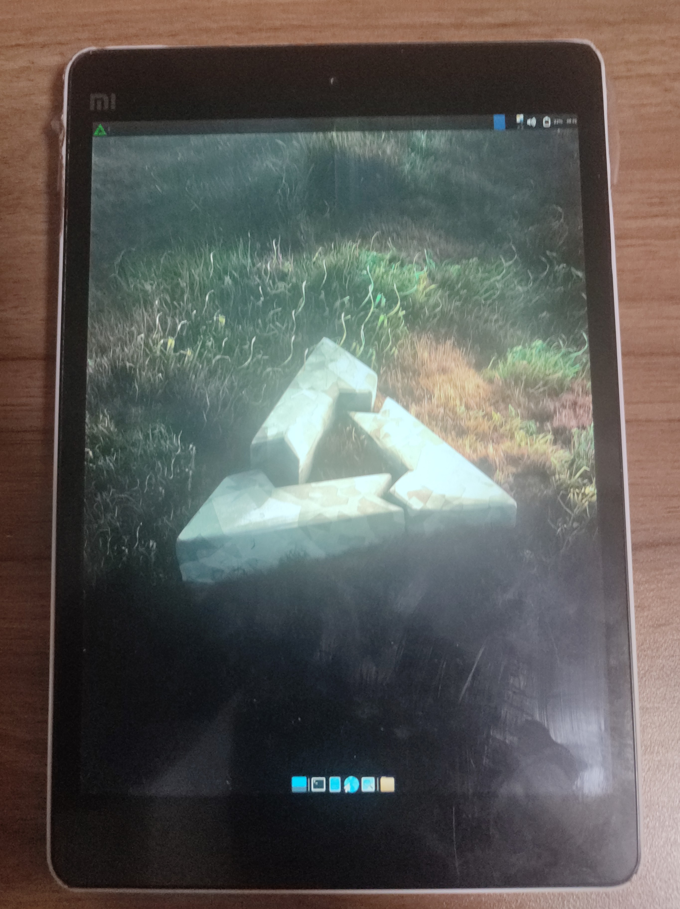

Xiaomi Mi Pad (xiaomi-mocha)
|
 The front of Xiaomi Mi Pad | |
| Manufacturer | Xiaomi |
|---|---|
| Name | Mi Pad |
| Codename | xiaomi-mocha |
| Released | 2014 |
| Category | testing |
| Original software | Android |
| Original version | 4.4.4 |
| Hardware | |
| Chipset | Nvidia Tegra K1 (T124) |
| CPU | 4x 2.2 GHz Cortex-A15 |
| GPU | Nvidia GK20A (192-core Kepler) |
| Display | 1536 x 2048 LCD IPS |
| Storage | 16 GB / 64 GB |
| Memory | 2 GB |
| Architecture | armv7 |
| Type | tablet |
{kind=link}
| USB Networking |
Broken
|
|---|---|
| Flashing | |
| Touchscreen |
Broken
|
| Display |
Works
|
| WiFi | |
| FDE | |
| Mainline |
Partial
|
| Battery | |
| 3D Acceleration | |
| Audio | |
| Bluetooth | |
| Camera | |
| GPS | |
| Mobile data |
Unavailable
|
| SMS |
Unavailable
|
| Calls |
Unavailable
|
| USB OTG | |
| NFC |
Unavailable
|
| Accelerometer | |
|---|---|
| Magnetometer | |
| Ambient Light | |
| Proximity | |
| Hall Effect | |
| Barometer | |
| Power Sensor | |
| Camera Flash | |
|---|---|
| Keyboard |
Unavailable
|
| Touchpad |
Unavailable
|
| USB-A |
Unavailable
|
| HDMI/DP | |
| Ir TX | |
| Ir RX | |
| Stylus | |
| Haptics | |
| Ethernet | |
| FOSS bootloader | |
|
This device is based on the Tegra K1. See the SoC page for common tips, guides and troubleshooting steps |
Contributors
- CEllenvia
Users owning this device
- CEllenvia (Notes: 16Giga, Atmel touchpad)
How to enter flash mode
Hold Power + Volume Down until "FASTBOOT" shows on screen
Installation
$ pmbootstrap initfs hook_add debug-shell
$ pmbootstrap install
$ pmbootstrap flasher flash_rootfs --partition userdata # Flashing to the system partition fails with (remote: '(InvalidSize)'), May cause by 2 system partition.
$ pmbootstrap flasher flash_kernel
Situations
Mainline in progress although very slow. Sorry about that but I have limit time since I'm also busy with my life. Based on existing work. [1] Try to bringing to the last Linux LTS.
This device comes with a interesting boot package method, which dt.img isn't QCDT style at all. Instead, it just use dtb file as dt.img.
Below are Issues in downstream kernel and only for historical purpose.
after some random defconfig edit, the situation fell back.( w/o debug-shell it will hang up and watchdog will perform reboot) try to fall back to defconfig which cause kernel crash.
the dt.img is still blob[2] (extract from lineage), discussed in matrix and result is that I need a special dtbTool for this device.[3] I dont have experience with this.
Nearly all /sys except /sys/fs will disappear after continue booting with pmos_continue_boot, but it can be remounted.
Screen can work ( tested by cat random to device)
Mainline Status
| Function | Hardware | Status | Info |
|---|---|---|---|
| Boot | - | Y | Boot with exists 5.4 fork. |
| Display | Sharp LQ079L1SX01 | Y | - |
| Touchscreen | Atmel mXT1664T2-C2U/Synaptics ? | P | There are two kinds of touchscreen, which for my device is mXT1664T2-C2U. Now work with forward port driver. |
| Onscreen RGB LED | Texas Instruments(National Semiconductor) LP5521 | Y | Need to add to DTS |
| Backlight LED | Texas Instruments LP8556 | Y | - |
| Charger IC | Texas Instruments BQ24192 | Y | Need to add to DTS |
| Battery Management | Texas Instruments BQ27520-G4 | Y | Need to add to DTS |
| Wi-Fi, BT & FM | Cypress(Broadcom) CYW4354XKUBG | P | Only work without TOSforPSCI, or it will not work |
| SDCard | Onsemi CM1624 | - | - |
| GPU | NVIDIA GK20A | P | Known issues |
| Audio | NXP TFA9890 | - | newly added, cant be found in exists works. https://lore.kernel.org/all/20220602164504.261361-1-amartinz@shiftphones.com/T/ |
See also
The Kernel Xiaomi Official released: [4]
pmaports!3735 Initial merge request